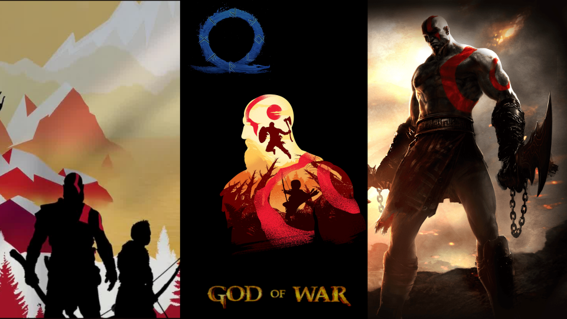

I wanted to create a book cover showcasing the evolution of a character in a video game I've been playing throughout my childhood and now in my adulthood. I got my idea from the game disc covers and some screenshots from the game itself. The growth of the character from an angry mortal seeking vengeance to a god pursuing peace is what I sought to show on the cover. I had a graphic/comic book cover in mind where the book would be more of a graphic novel instead of a traditional novel. I used digital editing techniques like: Resizing: I had to resize most of the high resolution images to make them fit together on the page. Since all of the art I found on the internet was of different sizes, I had to scale and resize them to make them fit correctly. Cropping: I had to crop parts of some of the images I found in order to make them go well together and make sure I capture only the essential details which I wanted. Opacity: I wanted to put the logo of the game on the cover to mark the final evolution of the character and I used opacity and contrast to make it stand out less on the cover because it was a vibrant blue. After reducing the opacity it prevented my eyes from being drawn to it immediately and standing out like a sore thumb in the midst of the red, orange black colour scheme. Text: The text was done with inspiration from the official font and I decided to maintain by using the same. I wanted it to stick to the original. I believe the three images really show the three stages the character has gone through and I used simple editing techniques to depict it in the best way possible.
I love reading books since I was a child and I have always wanted to open a bookstore or a library The logo I made was for a bookstore named Enchanted Books because I think books are magical and take you to a different world when you start reading them. I kept a generic brown coloured book in the center and to emphasize the magic of books I added stars and planets around and on the book. The stars and their trails are golden in colour and the planet has a ring around it like Saturn. I believe it is a simple logo which shows the enjoyment that books bring and I added the steps for making the logo in the Powerpoint as well. I wanted it to be the logo of a bookstore I would have wanted to visit when I was a kid and that's why I didn't complicate the logo and made it memorable with the stars and planets.